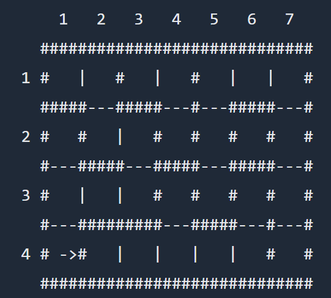

一教的教室
背景知识（雾）
在 USTC，一教是“物理实验圣地”，由于全校通修大雾实验，且大雾实验非常能够“锻炼学生的能力”，妮可人素来有问候一教的习俗。
题目描述
由于一教需要安排各种各样的物理实验，每个实验需要的实验设备不一样大，因此需要重新规划一教的教室。
给定一教现在的平面图，首先你需要知道现在的一教有几个教室，每个教室有多大。
接下来你可以规划新的一教了。你只能拆掉其中的一堵墙，形成一个更大的教室。
你想知道，这样能形成的最大的教室的大小，以及需要拆掉的墙是哪一堵。
请仔细研究下面这个一教平面图：

其中#是墙体的位置， | 和 - 都没有墙，可以自由通行， -> 指向最优方案需要拆除的墙。
在上面的例子中，一教的大小是 7 * 4 个小方块，共有5个教室。
一个教室指的是互相连通的小方块。这几个教室的大小分别是 1 , 3 , 7 , 8 , 9个小方块。
拆掉如图所示的墙，能形成的最大的教室的大小是 16
输入描述
第一行两个整数 m n ，表示一教有 n 行 m 列个小方块，请注意这里的行和列，接下来有 n 行输入，每行 m 个数字。
每一个小方块对应的数字告诉我们这个小方块的东西南北是否有墙存在。
每个数字是由以下四个整数中的任意个加起来的。
1: 在西面有墙
2: 在北面有墙
4: 在东面有墙
8: 在南面有墙
一教内部的墙会被规定两次。比如说 (1,1) 南面的墙，也会被标记为 (2,1) 北面的墙
对于 100% 的数据，1 ≤ n , m ≤ 50
输出描述
输出包含如下四行:
第一行：当前一教的教室数目。
第二行：当前最大教室的大小
第三行：移除一面墙能得到的最大的教室的大小
第四行：移除哪面墙可以得到面积最大的新教室。
有多解时选最靠西的，仍然有多解时选最靠南的。同一小方块北边的墙比东边的墙更优先。
用该墙的南面单位的北墙或西面单位的东墙来表示这面墙，方法是输出邻近单位的行数、列数和墙的方位（ N 或者 E ）。
样例输入
7 4
11 6 11 6 3 10 6
7 9 6 13 5 15 5
1 10 12 7 13 7 5
13 11 10 8 10 12 13样例输出
5
9
16
4 1 E
//需要注意最后有一个空行解题思路
本题实际上是在一个n*m 的矩形中的搜索问题。
首先，题目对每个格子四周有无墙给的信息是 1，2，4，8 中任意个的和，具有明显的位运算暗示，只要通过位运算即可得到有无墙。
对于第一问，一教的教室数目实为矩形中最大连通图的个数。为了得到图中连通图的个数，只要把连通的图（也就是一个教室），通过搜索（DFS 或 BFS）的方式，做上相同的标记（我们称之为“涂色”），这里我们按顺序把找到的教室依次“涂”上1，2，3……等数字。最后看看最大的数字即可。
对于第二问，最大教室的大小，我们可以在第一问搜索的过程中，用一个面积数组（area）顺便存储该教室的面积，即在标记第i个教室时，每搜过一个点，area[i]++。
对于第三问，我没有想到很优秀的解法，但由于问题规模不大，故可以尝试枚举（其实复杂度和搜索一样，都是 O(m*n)，因此无所谓）：枚举推倒的墙，所得到新的教室面积为其左右（或上下）两侧教室面积和，我们只要得到两侧的标记数字 i 和 j ，area[i] + area[j] 为最大的面积，之后只要枚举即可，用 maxArea 和 x，y，direction 记录最大教室的面积和推倒的墙的方位。值得注意的是，在枚举推倒的墙时，注意到题目描述
有多解时选最靠西的，仍然有多解时选最靠南的。同一小方块北边的墙比东边的墙更优先。
因此我们枚举方块时，应按照西 -> 东，南 -> 北的顺序枚举，且某个小方块应先枚举北边再枚举东边。
同时还应该注意：输入顺序是 m n，而矩形是 n*m 的，且输出最后有一个空行。
第三问解决后第四问也随之解决。
AC代码
#include <cstring>
#include <iostream>
using namespace std;
int n, m; //表示一教的行和列
int step; //搜索的步数
int building[51][51]; //存储一教平面图
int visited[51][51]; //搜索时的标记数组，这里把搜索到的第n个教室内的
//所有方块都标记为n方便索引某个方块所在教室的面积
int area[2500]; //存储各个教室的面积
int dx[4] = {0, -1, 0, 1}; //dx和dy是搜索用的位置变化数组，从0到3分别对应西北东南
int dy[4] = {-1, 0, 1, 0};
bool isInside(int x, int y) { //判断搜索时点还在不在区域内
return x >= 1 && x <= n && y >= 1 && y <= m;
}
bool noWall(int x, int y, int k) {
return !(building[x][y] & (1 << k));
//由于数据是由几个二进制位相加得到，k是几，这个二进制位就是1左移几位
}
void dfs(int x, int y, int tag) { //函数功能：深搜；参数：x，y表明搜索的位置，tag是
//搜索到的教室的编号，把（x，y）点标记为tag
step++; //步长+1；
visited[x][y] = tag; //标记点已经搜过
int xx, yy; //x，y的相邻点
for (int k = 0; k < 4; ++k) { //遍历四个方位，k从0到3分别对应西北东南
xx = x + dx[k], yy = y + dy[k];
if (isInside(xx, yy) && !visited[xx][yy] && noWall(x, y, k)) {
dfs(xx, yy, tag);
}
}
}
void read() { //数据读入
cin >> m >> n;
for (int i = 1; i <= n; ++i) {
for (int j = 1; j <= m; ++j) {
cin >> building[i][j];
}
}
}
int search() { //搜索，求出教室数目和每个教室的面积
int num = 0; //存储一教的教室数目
for (int i = 1; i <= n; ++i) {
for (int j = 1; j <= m; ++j) {
if (!visited[i][j]) {
num++;
step = 0;
dfs(i, j, num);
//如果这个点没有访问过，对其进行深搜，遍历其所在的教室，并求出面积，存在step里面
area[num] = step;
}
}
}
cout << num << endl;
return num;
}
void findMax(int num) {
int maxArea = 0;
for (int i = 1; i <= num; ++i) {
if (maxArea < area[i]) {
maxArea = area[i];
}
}
cout << maxArea << endl;
}
void remove() { //考虑移除哪一堵墙
//思路：枚举每个小方块，如果其N或E方向有墙，则计算其N或E方向的小方块所在教室的面积与当前
//教室面积之和，求出最大的面积之和即可
int maxArea = 0, s; //maxArea是移除墙后最大教室的面积，s存储移除墙后得到的新教室面积
int x, y; //x,y,direction是最终输出的答案
char direction;
for (int j = 1; j <= m; ++j) { //西边优先
for (int i = n; i >= 1; --i) { //南边优先
for (int k = 1; k <= 2; ++k) { //北面墙优先，k=1是北面，k=2是东面
if (building[i][j] & (1 << k)) {
int room1, room2;
room1 = visited[i][j];
room2 = visited[i + dx[k]][j + dy[k]];
if (room1 != room2) {
s = area[room1] + area[room2];
if (s > maxArea) {
maxArea = s;
x = i;
y = j;
if (k == 1)
direction = 'N';
else
direction = 'E';
}
}
}
}
}
}
cout << maxArea << endl;
cout << x << " " << y << " " << direction << endl;
}
int main() {
read();
memset(visited, 0, sizeof(visited));
memset(area, 0, sizeof(area));
int num = search(); //num为教室数目
findMax(num);
remove();
return 0;
}